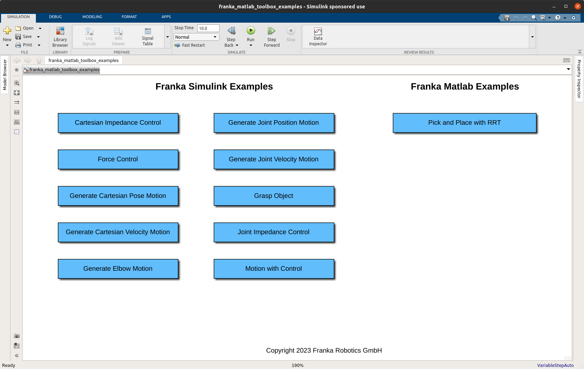
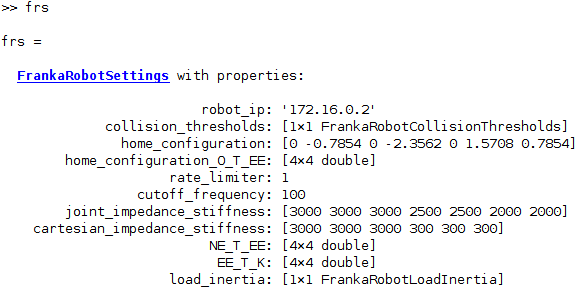
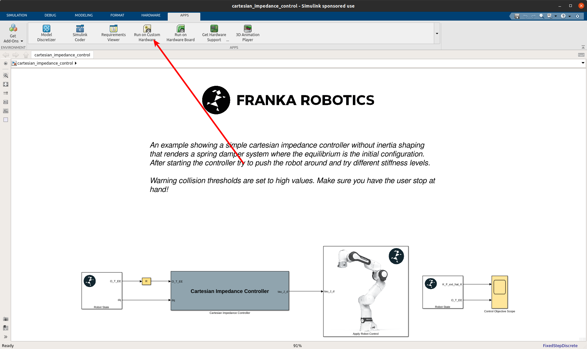
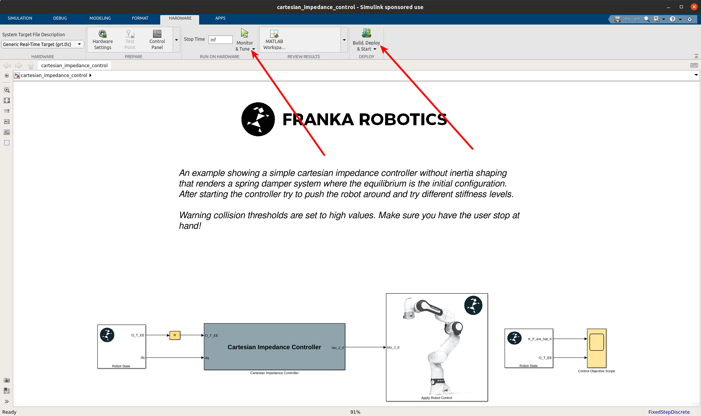

Getting started
Overview
A set of Simulink & Matlab examples is included within the Franka MATLAB Toolbox. Feel free to experiment, adjust them and expand them to fit your project needs!
You can navigate through the examples by typing:
>> franka_matlab_toolbox_examples();

Franka MATLAB Toolbox Examples Navigator.
Initialization
After opening, double clicking on any of the simulink models the robot settings will be loaded automatically in the workspace, in the form of the object frs.
Hint
The Simulink models are delivered in R2021a version. They will convert automatically to your Matlab version when you try to save the model.

The Franka Robot Settings object.
The robot_ip is set to 172.16.0.2. Make sure that the robot_ip, as well as all the other parameters matches your setup for your intended purposes.
>> frs.robot_ip = <your robot ip string>
You can modify the default settings for the FrankaRobotSettings with
>> edit FrankaRobotSettings.m
Execution
Let’s start by selecting the Run on custom hardware App from the Apps pane in Simulink.

“Run on custom hardware” Simulink App.
Important
Before executing make sure that the brakes of the robot are disengaged, the FCI mode is activated in Desk and that the robot is in execution mode(user button is released)!
You can then select from the Hardware tab either Monitor & Tune in case monitoring through the external mode is desired or Build, Deploy & Start for just executing the application without monitoring.

Hardware Simulink App.
Caution
The robot will move! Make sure that you are monitoring the situation, ready to take action if necessary!
Alternatively you can run the auto-generated executable located in the current working space manually from a terminal:
In case of Linux:
$ ./<simulink_model_name>
or in case of Windows:
> <simulink_model_name>.exe
Automatic error recovery
If the robot encounters an error state and transitions to reflex mode, you may attempt a recovery by executing the automatic error recovery command in Matlab.
>> fr = FrankaRobot(<robot ip as string>);
>> fr.automatic_error_recovery();
In case the command fails and the robot remains in the erroneous state try using the guiding mode to manually bring back the robot to a valid configuration.
Hint
Checkout the matlab library for a set of helper functions that can help to optimize your workflow.